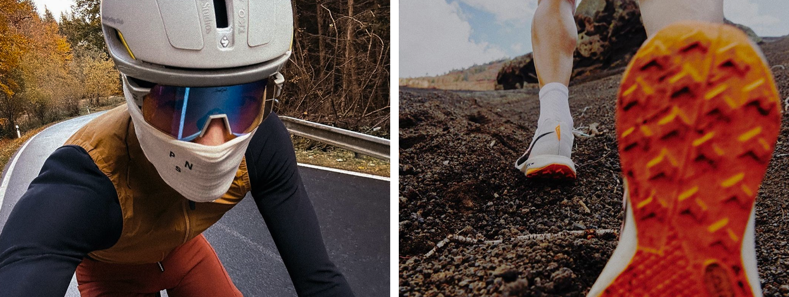
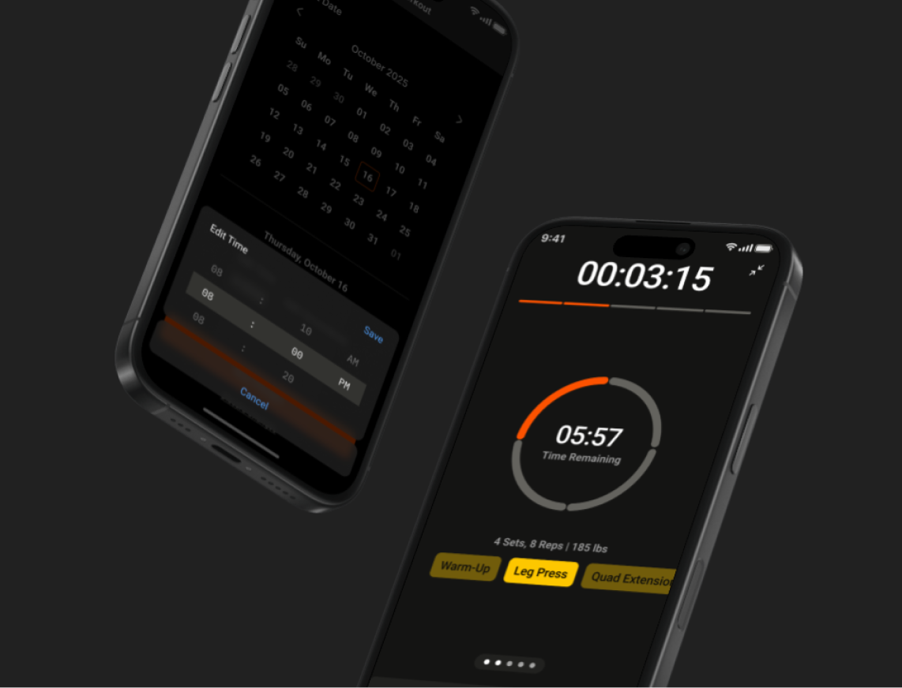
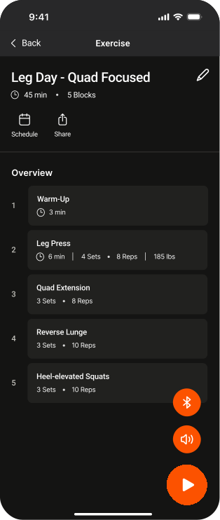
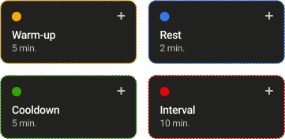

Strava
2025
Project
4 weeks
User Research
UX/UI Design
Prototype
Team
Caleb Wu
Meghna Rajamohan
Rebecca Yeung

Strava is a performance tracking app. But secondly, a social platform for athletes. Our team created an in-house workout builder feature.
I built the workout recording flow to accommodate the new workout builder.

The Problem
Strava lacks a unified system for non-cardio workouts, forcing users to rely on external apps to plan, track, and compete a workout, all while still tracking progress on Strava.
Identifying the Issue
After interviewing 9 users, the majority of them felt these three ways:
91%
of users said switching between multiple apps disrupted their workout momentum
75%
of users felt premium paywalls blocked features they wanted
89%
of users valued keeping all their progress tracking in one place
Our Approach
A workout block builder to manage cardio and non-cardio activities in one platform.
Folder Organization
To help users navigate their workouts efficiently, I introduced a folder-based structure that lets them group routines by goals or training style.
Within a dedicated page, workouts are organized into these folders, each preview revealing key details, including total time and number of blocks. This helps users choose a routine effectively.
Workout Overview
Selecting a workout navigates to an overview with clear CTAs to start.
I reviewed existing workout platforms to clarify which features users value most at this stage. With that, I identified three essential controls to surface:

Buttons are contrasted in Strava's signature orange and placed in the bottom-right corner for easy, intuitive access.
Timers
To help users stay focused without overwhelming them, the screen also uses a dual-timer system.
Workouts also start with a three-second countdown, giving users time to transition smoothly into the first exercise.
A timer at the top displays total time elapsed, giving users a sense of progress.
A central timer shows the remaining time for the current exercise.
Color Coded Exercises
Current exercises are titled and colour-coded. These colours map back to the custom block builder, creating consistent visual links so users can quickly recognize what type of activity they’re doing.

(Blocks from the workout builder!)
Set-based Exercises
Within a divided ellipse, each segment fills as a set is completed, offering a simple understanding of progress in the set without disrupting focus.
Progress Indicators
A horizontal progress bar along the top shows the user’s position within the entire workout. This gives a clear sense of pacing while still keeping the interface minimal.
Haptic Feedback
Instead of looking at the screen constantly, our feature incorporates haptic cues, sounds or vibrations for watch users that signal when to start, stop, or transition to the next exercise, creating an experience that remains intuitive and hands-free.